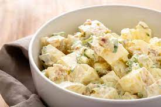

Home
Potato Salad

Description
A classic potato salad is a must-have at every picnic and barbecue. And in my opinion, this one is the best. Based off of my dad's recipe, it's creamy, tangy, with a little bit of crunch from the onion and pickles. What it's not: too sweet, which is one of my potato salad pet peeves.
Ingredients
- 3 lb. Yukon Gold potatoes, chopped into 1” pieces
- Kosher salt
- 1 1/2 c. mayonnaise
- 1 small red onion, finely chopped
- 1 tbsp. Dijon mustard
- 1 tbsp. lemon juice
- 1/4 c. chopped pickles
- 1/2 tsp. paprika
- 4 hard boiled eggs, chopped
- 1/4 c. finely chopped chives
- Freshly ground black pepper
Methodology
- In a large pot, cover potatoes with water and season generously with salt. Bring water to a boil and cook until potatoes are easily pierced with a knife, 12 to 15 minutes. Drain and let cool slightly.
- In a large bowl, combine mayonnaise, red onion, Dijon mustard, lemon juice, pickles and paprika. Stir until well combined. Fold in cooked potatoes, eggs, and chives, then season with salt and pepper. Refrigerate until ready to serve.